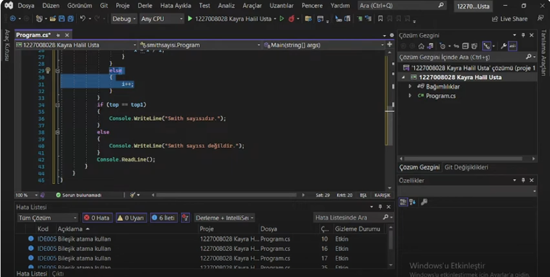
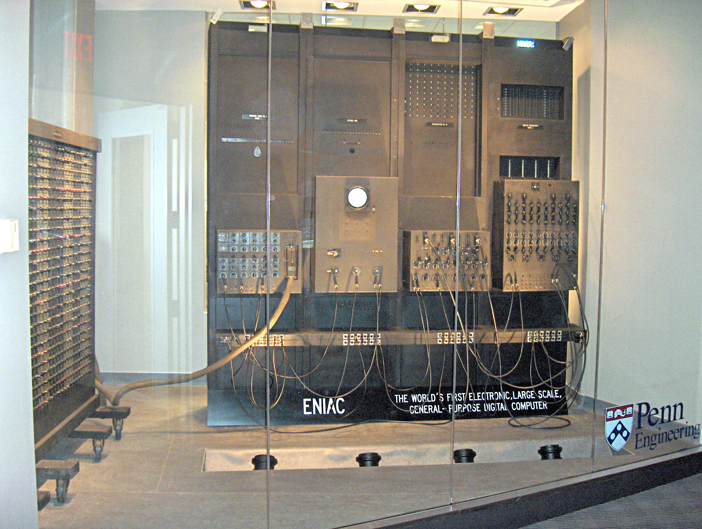

100 İle 200(Dahil) Arasındaki Sayıların Smith Sayı Olup Olmadığını Kontrol Eden c# Konsol Uygulaması
C# Windows Forms uygulaması ile 100 İle 200(Dahil) Arasındaki Sayıların Smith Sayı Olup Olmadığını Kontrol Eden bir uygulama, Smith sayısı, asal olmayan ve basamaklarının toplamı, asal çarpanlarının (bir asal çarpanın birden çok kez bulunması durumunda her bir kezinin) basamakları toplamına eşit olan bir sayıdır.
Devamını Oku

Rastgele girilen (-50 ve +50) 25 elemanlı bir sayı dizisinin en büyük ve en küçük elemanlarının ortalamasını bulan c# Konsol Uygulaması
C# Windows Forms uygulaması ile Rastgele girilen (-50 ve +50) 25 elemanlı bir sayı dizisinin en büyük ve en küçük elemanlarının ortalamasını bulan bir uygulama.
Devamını Oku
C# İki boyutlu diziler Elemanları rastgele girilen 4x4 matris oluşturan C# Windows Forms uygulaması
C# ile iki boyutlu diziler kullanarak rastgele elemanlardan oluşan 4x4 matris oluşturmak, belirli bir boyutta (bu örnekte 4x4) sayılardan oluşan bir tablo (matris) yaratmak için kullanılır
Devamını Oku
C# Forms Class Kuaför Örneği
C# Windows Forms uygulaması ile kuaför rezervasyon veya müşteri yönetim sistemi oluşturmak, Windows Forms bileşenlerini kullanarak bir kuaförün müşteri ve hizmet işlemlerini yönetmesini sağlar.
Devamını Oku

 +90 546-580-35-21
+90 546-580-35-21
 kayrausta04@gmail.com
kayrausta04@gmail.com
Merhaba, ben Kayra Halil Usta. Kırklareli Üniversitesinde Bilgisayar Programcılığı, Eskişehir
Anadolu Üniversitesinde Web Tasarımı Ve Kodlama okuyorum. 4 Ekim 2004 İstanbul doğumluyum. Okulda
kendim ve arkadaşlarımın projelerini ve araştırmalarını bilgisayar ile ilgili bölüm okuyan ve bilgisayar
ile ilgilenen herkese yardımcı olması amacı ile paylaşıyorum. Ayrıca yine üniversiten arkadaşlarla kurduğumuz KRKIT.COM adresinde ve İnstagram sayfasında
her türlü web hizmetini veriyoruz. Detaylı bilgi için ilgili linklerden ulaşabilirsiniz.
Bilgisayarla İlgili İlginç Bilgiler;
Vladimir Lukyanov, Su bilgisayarı:
Su bilgisayarı, geleneksel elektrikli bilgisayarların yerine suyun kullanıldığı bir bilgi işlem teknolojisidir. Bu teknoloji, suyun akışını ve dalgalanmasını kullanarak bilgi işlemi gerçekleştirmektedir.

ilk dijital bilgisayar ENIAC 168 metrekarelik bir alanı kaplıyordu:
Bu bilgisayar, yaklaşık 27 ton ağırlığında olup 18.000'den fazla vakum tüpü, 70.000 direnç, 10.000 kapasitör ve 6.000 manuel anahtardan oluşuyordu.
İlk WebCam Taze Kahve Aşkıyla Bulundu:
1991 yılında, Cambridge Üniversitesi'nde bilgisayar bilimleri araştırmacısı Quentin Stafford-Fraser ve ekibi, bir taze kahve makinesinin durumunu izlemek için bir kamera kurdular. Bu kamera, kullanıcılara ofisteki kahve makinesinin doluluğunu gösteriyordu
1980 yılında 1 GB bir sabit disk 250 kg ağırlığındaydı:
Bu dönemde sabit diskler genellikle büyük boyutlarda olurdu ve 1 GB'lık bir kapasiteye sahip bir disk, yaklaşık 250 kg ağırlığa sahip olabiliyordu. Bu sabit diskler, genellikle büyük veri merkezlerinde ve kurumsal kullanımlarda kullanılıyordu.
Teknolojinin ilerlemesiyle birlikte, sabit disklerin kapasiteleri artarken boyutları ve ağırlıkları önemli ölçüde azaldı.